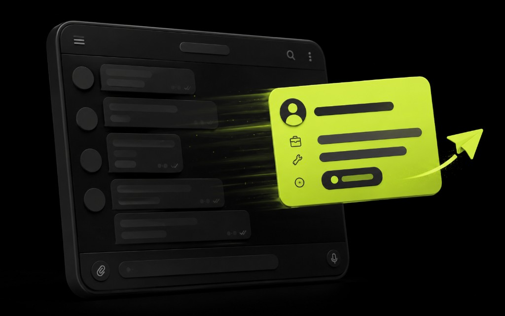

Проблема не в боте, а в контексте
Типичный Telegram-бот для бизнеса в Узбекистане принимает телефон и кидает строку менеджеру. Дальше начинается детектив: «что человек хотел?», «с какого канала?», «уже писали?». Клиент ждёт ответа в течение минут, а команда переспрашивает базовое. Конверсия падает не из‑за рекламы, а из‑за плохого маршрута заявки.
Хороший сценарий передаёт источник, интересующую услугу, последний шаг в боте и короткий комментарий пользователя. Тогда первый ответ предметный: «видели заявку на лендинг под доставку, могу созвониться в 15:00». Это меняет ощущение сервиса сильнее, чем новый дизайн чата.

Минимум полей, который уже спасает
Не превращайте диалог в анкету на 12 шагов — люди бросают. Достаточно 3–5 вопросов: имя, контакт, что нужно, когда удобно связаться, и опционально город/филиал. Остальное менеджер уточнит в разговоре. Если продукт сложный (сайт + CRM + бот), спрашивайте сегмент: «нужен лендинг / бот / поддержка» — это уже фильтр для правильного специалиста.
- UTM или метка источника: реклама, QR в зале, ссылка с сайта.
- Название услуги или тарифа, если человек выбирал кнопками.
- Текст свободного вопроса без обрезки.
- Время заявки и язык интерфейса (ru/uz) — полезно для ответа.
Статусы вместо хаоса в чатах
Даже без полноценной CRM можно жить по трём статусам: новая, в работе, закрыта. Ведите их в таблице или в одной теме чата с тегами. Главное — единое место. Когда заявки разлетаются по личкам, «потеряшки» неизбежны: вечером один менеджер взял, утром второй пишет клиенту снова.
- Новая — ещё никто не взял; видна всем дежурным.
- В работе — имя ответственного и срок первого ответа.
- Закрыта — сделка или отказ с короткой причиной.
Причина отказа ценнее, чем кажется: «дорого», «нужен другой город», «хотели только бота» — это продукт и бриф на следующий спринт. Без фиксации вы снова будете гадать, почему лендинг «не конвертит».
Связка сайта и Telegram-бота
Часто форма на сайте и бот живут отдельно. Плохо: человек оставляет заявку на сайте, потом пишет в бот — и вы не видите, что это один клиент. Хорошо: сайт шлёт уведомление в тот же канал, что и бот, с пометкой источника. Тогда аналитика и продажи смотрят одну воронку.
Если заявок много, добавьте простую очередь и SLA: ответ в рабочее время за 15–30 минут. В Ташкенте скорость ответа часто важнее идеального скрипта. Бот может прислать авто-подтверждение («заявку получили, ответим до …»), чтобы человек не ушёл к конкуренту.
Когда не надо усложнять
Не тяните сразу полную CRM, AI-квалификацию и мультиязычные сценарии, если у вас 5–10 заявок в день и один менеджер. Сначала добейтесь: заявка доходит, контекст есть, статус понятен, ответ быстрый. Интеграции и сложную аналитику — после живых данных за первую-две недели.
Telegram-бот для заявок — это не «фича ради тренда», а канал продаж. Относитесь к нему как к точке входа в CRM: чем чище вход, тем меньше хаоса и тем выше процент сделок из того же рекламного бюджета.
Шаблоны первого ответа
Когда заявка пришла с контекстом, менеджеру не нужны скрипты на три страницы. Достаточно короткого шаблона: поздороваться, подтвердить услугу из заявки, предложить слот или следующий шаг. В Ташкенте скорость важнее идеальной вежливости — но тон должен быть человеческим, не «ваша заявка зарегистрирована в системе».
Разведите шаблоны по источникам: реклама, сайт, QR в филиале. Для SEO-трафика человек мог сравнивать подрядчиков дольше — дайте больше ясности по срокам и составу. Для тёплого Telegram-трафика можно сразу к делу. Аналитика и метка источника как раз помогают выбрать тон.
Незакрытый хвост: если клиент не отвечает сутки, мягкое касание с пользой («можем прислать примеры лендингов / сценарий бота») лучше, чем пустое «вы ещё с нами?». Фиксируйте причину отказа в статусе — это корм для продукта и рекламы.
Если заявок больше, чем людей, очередь обязательна. Иначе все хватают «красивые» лиды, а остальные остывают. Правило простое: новые заявки берёт дежурный по кругу, эскалация сложных — старшему. Telegram-бот тут лишь транспорт; дисциплина — в команде.
Для бизнеса в Узбекистане частый кейс — двуязычность. Если бот спросил язык, ответьте на нём. Смена языка без причины ощущается как невнимание. Храните язык в карточке заявки рядом с телефоном и услугой.
От чата к простой CRM без перегиба
Когда заявок становится больше двадцати в день, одной группы в Telegram мало. Но прыгать сразу в тяжёлую CRM тоже рано, если процесс не описан. Промежуточный шаг: таблица или лёгкая CRM с полями источника, услуги, статуса и ответственного. Бот только наполняет строку — люди ведут статусы.
Синхронизация сайта и бота критична: одинаковые названия услуг, одинаковые UTM, один справочник менеджеров. Иначе аналитика врёт, а отчёты «по каналам» превращаются в споры. Для бизнеса в Узбекистане, где часто смешаны онлайн и офлайн касания, единый словарь полей — база.
Обучите команду не переписывать клиента в личку «в обход» статуса. Иначе метрики умрут, а «потеряшки» вернутся. Правило: любой контакт — из карточки/строки заявки. Звучит жёстко, работает мягко через две недели привычки.
Раз в месяц выгружайте причины отказа и частые вопросы. Это готовый FAQ для лендинга и правки сценария бота. Продукт и маркетинг питаются из одного потока заявок — если вы его аккуратно логируете.
Чеклист внедрения на две недели
Неделя 1: соберите поля заявки, подключите уведомления, сделайте три статуса, научите менеджеров шаблону первого ответа. Проверьте, что заявки с сайта и из Telegram-бота падают в один канал с разными метками источника. Без этого аналитика и CRM начнут жить разными жизнями.
Неделя 2: добавьте причину отказа, авто-подтверждение клиенту, простую очередь дежурств. Посмотрите отвал на шагах бота и уберите лишний вопрос. Если команда всё ещё переписывается в личках в обход статусов — остановитесь и почините дисциплину, иначе автоматизация усилит хаос.
Для бизнеса в Узбекистане важна скорость реакции в рабочее время Ташкента. Замерьте медианное время ответа. Если оно больше часа при тёплом трафике, сначала улучшайте процесс людей, потом усложняйте сценарий. Хороший бот не маскирует медленные продажи — он их подсвечивает.
Наконец, зафиксируйте владельца бота: кто меняет тексты кнопок, кто ротирует токены, кто смотрит отчёт по заявкам в понедельник. Бесхозный канал деградирует за месяц. Это такая же роль, как владелец лендинга или рекламного кабинета.